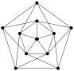

Section 2.3 Planar Graphs
Objectives
After completing this section, you should be able to do the following.
Distinguish between planar and non-planar graphs.
Use Euler’s formula to prove that certain graphs are non-planar.
Apply Euler’s formula to polyhedra.
Subsection Section Preview
Investigate!
When a connected graph can be drawn without any edges crossing, it is called planar. When a planar graph is drawn in this way, it divides the plane into regions called faces.
Draw, if possible, two different planar graphs with the same number of vertices, edges, and faces.
Draw, if possible, two different planar graphs with the same number of vertices and edges, but a different number of faces.
When is it possible to draw a graph so that none of the edges cross? If this is possible, we say the graph is planar (since you can draw it on the plane).
Notice that the definition of planar includes the phrase “it is possible to.” This means that even if a graph does not look like it is planar, it still might be. Perhaps you can redraw it in a way in which no edges cross. For example, this is a planar graph:
That is because we can redraw it like this:
The graphs are the same, so if one is planar, the other must be too. However, the original drawing of the graph was not a planar representation of the graph.
When a planar graph is drawn without edges crossing, the edges and vertices of the graph divide the plane into regions. We will call each region a face. The graph above has 3 faces (yes, we do include the “outside” region as a face). The number of faces does not change no matter how you draw the graph (as long as you do so without the edges crossing), so it makes sense to ascribe the number of faces as a property of the planar graph.
WARNING: you can only count faces when the graph is drawn in a planar way. For example, consider these two representations of the same graph:
If you try to count faces using the graph on the left, you might say there are 5 faces (including the outside). But drawing the graph with a planar representation shows that in fact there are only 4 faces.
Worksheet Preview Activity
1.
2.
3.
4.
Subsection Euler’s formula for planar graphs
There is a connection between the number of vertices (\(v\)), the number of edges (\(e\)), and the number of faces (\(f\)) in any connected planar graph. This relationship is called Euler’s formula.
Euler’s Formula for Planar Graphs.
For any connected planar graph with \(v\) vertices, \(e\) edges, and \(f\) faces, we have
\begin{equation*}
v-e + f = 2\text{.}
\end{equation*}
Why is Euler’s formula true? One way to convince ourselves of its validity is to draw a planar graph step by step. Start with the graph \(P_2\text{:}\)
Any connected graph (besides just a single isolated vertex) must contain this subgraph. Now we build up to our graph by adding edges and vertices. Each step will consist of either adding a new vertex connected by a new edge to part of your graph (so creating a new “spike”) or by connecting two vertices already in the graph with a new edge (completing a circuit).
What do these “moves” do? When adding the spike, the number of edges increases by 1, the number of vertices increases by 1, and the number of faces remains the same. But this means that \(v - e + f\) does not change. Completing a circuit adds one edge, adds one face, and keeps the number of vertices the same. So again, \(v - e + f\) does not change.
Since we can build any graph using a combination of these two moves, and doing so never changes the quantity \(v - e + f\text{,}\) that quantity will be the same for all graphs. But notice that our starting graph \(P_2\) has \(v = 2\text{,}\) \(e = 1\) and \(f = 1\text{,}\) so \(v - e + f = 2\text{.}\)
The argument we have outlined above is not quite correct, since we made the unjustified assumption that all graphs can be built up from \(P_2\) using only the two moves we described. To avoid this issue, we can use a minimal criminal argument. You are asked to do this in the exercises, but the idea is essentially the same as we have here, except that start with a minimal connected planar graph that does not satisfy the formula, then remove either an edge or a vertex (and its edge) to get a smaller connected planar graph that does satisfy the formula. But just like the adding moves we have described above, removing an edge or a vertex does not change the quantity \(v - e + f\text{.}\)
Subsection Non-planar Graphs
Investigate!
For the complete graphs \(K_n\text{,}\) we would like to be able to say something about the number of vertices, edges, and (if the graph is planar) faces. Let’s first consider \(K_3\text{:}\)
How many vertices does \(K_3\) have? How many edges?
If \(K_3\) is planar, how many faces should it have?
Repeat parts (1) and (2) for \(K_4\text{,}\) \(K_5\text{,}\) and \(K_{23}\text{.}\)
What about complete bipartite graphs? How many vertices, edges, and faces (if it were planar) does \(K_{7,4}\) have? For which values of \(m\) and \(n\) are \(K_n\) and \(K_{m,n}\) planar?
Not all graphs are planar. If there are too many edges and too few vertices, then some of the edges will need to intersect. The smallest graph where this happens is \(K_5\text{.}\)
If you try to redraw this without edges crossing, you quickly get into trouble. There seems to be one edge too many. In fact, we can prove that no matter how you draw it, \(K_5\) will always have edges crossing.
Theorem 2.3.1.
\(K_5\) is not planar.
Proof.
The proof is by contradiction. So assume that \(K_5\) is planar. Then the graph must satisfy Euler’s formula for planar graphs. \(K_5\) has 5 vertices and 10 edges, so we get
\begin{equation*}
5 - 10 + f = 2\text{,}
\end{equation*}
which says that if the graph is drawn without any edges crossing, there would be \(f = 7\) faces.
Now consider how many edges surround each face. Each face must be surrounded by at least 3 edges. Let \(B\) be the total number of boundaries around all the faces in the graph. Thus we have that \(3f \le B\text{.}\) But also \(B = 2e\text{,}\) since each edge is used as a boundary exactly twice. Putting this together we get
\begin{equation*}
3f \le 2e\text{.}
\end{equation*}
But this is impossible, since we have already determined that \(f = 7\) and \(e = 10\text{,}\) and \(21 \not\le 20\text{.}\) This is a contradiction so in fact \(K_5\) is not planar.
The other simplest graph which is not planar is \(K_{3,3}\)
Proving that \(K_{3,3}\) is not planar answers the classic houses and utilities puzzle: it is not possible to connect each of three houses to each of three utilities without the lines crossing.
Theorem 2.3.2.
\(K_{3,3}\) is not planar.
Proof.
Again, we proceed by contradiction. Suppose \(K_{3,3}\) were planar. Then by Euler’s formula, there will be 5 faces, since \(v = 6\text{,}\) \(e = 9\text{,}\) and \(6 - 9 + f = 2\text{.}\)
How many boundaries surround these 5 faces? Let \(B\) be this number. Since each edge is used as a boundary twice, we have \(B = 2e\text{.}\) Also, \(B \ge 4f\) since each face is surrounded by 4 or more boundaries. We know this is true because \(K_{3,3}\) is bipartite, so does not contain any 3-edge cycles. Thus
\begin{equation*}
4f \le 2e\text{.}
\end{equation*}
But this would say that \(20 \le 18\text{,}\) which is clearly false. Thus \(K_{3,3}\) is not planar.
Note the similarities and differences in these proofs. Both are proofs by contradiction, and both start with using Euler’s formula to derive the (supposed) number of faces in the graph. Then we find a relationship between the number of faces and the number of edges based on how many edges surround each face. This is the only difference. In the proof for \(K_5\text{,}\) we got \(3f \le 2e\) and for \(K_{3,3}\) we go \(4f \le 2e\text{.}\) The coefficient of \(f\) is the key. It is the smallest number of edges that could surround any face. If some number of edges surround a face, then these edges form a cycle. So that number is the size of the smallest cycle in the graph.
In general, if we let \(g\) be the size of the smallest cycle in a graph (\(g\) stands for girth, which is the technical term for this) then for any planar graph we have \(gf \le 2e\text{.}\) When this disagrees with Euler’s formula, we know for sure that the graph cannot be planar.
Subsection Polyhedra
Investigate!
A cube is an example of a convex polyhedron. It contains 6 identical squares for its faces, 8 vertices, and 12 edges. The cube is a regular polyhedron (also known as a Platonic solid) because each face is an identical regular polygon and each vertex joins an equal number of faces.
There are exactly four other regular polyhedra: the tetrahedron, octahedron, dodecahedron, and icosahedron with 4, 8, 12, and 20 faces respectively. How many vertices and edges do each of these have?
Another area of mathematics where you might have heard the terms “vertex,” “edge,” and “face” is geometry. A polyhedron is a geometric solid made up of flat polygonal faces joined at edges and vertices. We are especially interested in convex polyhedra, which means that any line segment connecting two points on the interior of the polyhedron must be entirely contained inside the polyhedron.
Notice that since \(8 - 12 + 6 = 2\text{,}\) the vertices, edges, and faces of a cube satisfy Euler’s formula for planar graphs. This is not a coincidence. We can represent a cube as a planar graph by projecting the vertices and edges onto the plane. One such projection looks like this:
In fact, every convex polyhedron can be projected onto the plane without edges crossing. Think of placing the polyhedron inside a sphere, with a light at the center of the sphere. The edges and vertices of the polyhedron cast a shadow onto the interior of the sphere. You can then cut a hole in the sphere in the middle of one of the projected faces and “stretch” the sphere to lie down flat on the plane. The face that was punctured becomes the “outside” face of the planar graph.
The point is, we can apply what we know about graphs (in particular planar graphs) to convex polyhedra. Since every convex polyhedron can be represented as a planar graph, we see that Euler’s formula for planar graphs holds for all convex polyhedra as well. We also can apply the same sort of reasoning we use for graphs in other contexts to convex polyhedra. For example, we know that there is no convex polyhedron with 11 vertices all of degree 3, as this would make 33/2 edges.
Example 2.3.3.
Is there a convex polyhedron consisting of three triangles and six pentagons? What about three triangles, six pentagons, and five heptagons (7-sided polygons)?
Solution.
How many edges would such polyhedra have? For the first proposed polyhedron, the triangles would contribute a total of 9 edges, and the pentagons would contribute 30. However, this counts each edge twice (as each edge borders exactly two faces), giving 39/2 edges, an impossibility. There is no such polyhedron.
The second polyhedron does not have this obstacle. The extra 35 edges contributed by the heptagons give a total of 74/2 = 37 edges. So far so good. Now how many vertices does this supposed polyhedron have? We can use Euler’s formula. There are 14 faces, so we have \(v - 37 + 14 = 2\) or equivalently \(v = 25\text{.}\) But now use the vertices to count the edges again. Each vertex must have degree at least three (that is, each vertex joins at least three faces since the interior angle of all the polygons must be less that \(180^\circ\)), so the sum of the degrees of vertices is at least 75. Since the sum of the degrees must be exactly twice the number of edges, this says that there are strictly more than 37 edges. Again, there is no such polyhedron.
To conclude this application of planar graphs, consider the regular polyhedra. We claimed there are only five. How do we know this is true? We can prove it using graph theory.
Theorem 2.3.4.
There are exactly five regular polyhedra.
Proof.
Recall that all the faces of a regular polyhedron are identical regular polygons and that each vertex has the same degree. Consider four cases, depending on the type of regular polygon.
Case 1: Each face is a triangle. Let \(f\) be the number of faces. There are then \(3f/2\) edges. Using Euler’s formula we have \(v - 3f/2 + f = 2\) so \(v = 2 + f/2\text{.}\) Now each vertex has the same degree, say \(k\text{.}\) So the number of edges is also \(kv/2\text{.}\) Putting this together gives
\begin{equation*}
e = \frac{3f}{2} = \frac{k(2+f/2)}{2}\text{,}
\end{equation*}
which says
\begin{equation*}
k = \frac{6f}{4+f}\text{.}
\end{equation*}
Both \(k\) and \(f\) must be positive integers. Note that \(\frac{6f}{4+f}\) is an increasing function for positive \(f\text{,}\) bounded above by a horizontal asymptote at \(k=6\text{.}\) Thus the only possible values for \(k\) are 3, 4, and 5. Each of these is possible. To get \(k = 3\text{,}\) we need \(f = 4\) (this is the tetrahedron). For \(k = 4\) we take \(f = 8\) (the octahedron). For \(k = 5\) take \(f = 20\) (the icosahedron). Thus there are exactly three regular polyhedra with triangles for faces.
Case 2: Each face is a square. Now we have \(e = 4f/2 = 2f\text{.}\) Using Euler’s formula we get \(v = 2 + f\text{,}\) and counting edges using the degree \(k\) of each vertex gives us
\begin{equation*}
e = 2f = \frac{k(2+f)}{2}\text{.}
\end{equation*}
Solving for \(k\) gives
\begin{equation*}
k = \frac{4f}{2+f} = \frac{8f}{4+2f}\text{.}
\end{equation*}
This is again an increasing function, but this time the horizontal asymptote is at \(k = 4\text{,}\) so the only possible value that \(k\) could take is 3. This produces 6 faces, and we have a cube. There is only one regular polyhedron with square faces.
Case 3: Each face is a pentagon. We perform the same calculation as above, this time getting \(e = 5f/2\) so \(v = 2 + 3f/2\text{.}\) Then
\begin{equation*}
e = \frac{5f}{2} = \frac{k(2+3f/2)}{2}\text{,}
\end{equation*}
so
\begin{equation*}
k = \frac{10f}{4+3f}\text{.}
\end{equation*}
Now the horizontal asymptote is at \(\frac{10}{3}\text{.}\) This is less than 4, so we can only hope to have \(k = 3\text{.}\) We can do so by using 12 pentagons, getting the dodecahedron. This is the only regular polyhedron with pentagons as faces.
Case 4: Each face is an \(n\)-gon with \(n \ge 6\text{.}\) Following the same procedure as above, we deduce that
\begin{equation*}
k = \frac{2nf}{4+(n-2)f}\text{,}
\end{equation*}
which will be increasing to a horizontal asymptote of \(\frac{2n}{n-2}\text{.}\) When \(n = 6\text{,}\) this asymptote is at \(k = 3\text{.}\) Any larger value of \(n\) will give an even smaller asymptote. Therefore no regular polyhedra exist with faces larger than pentagons.
Reading Questions Reading Questions
1.
Is the graph shown below planar? Explain your answer.
2.
Suppose you draw a graph with 10 vertices and 14 edges in such a way that no edges cross. How many faces could your graph have? Explain your answer(s).
3.
What questions do you have after reading this section? Write at least one question about the content of this section that you are curious about.
Exercises Practice Problems
1.
2.
3.
4.
5.
Exercises Additional Exercises
1.
Is it possible for a planar graph to have 6 vertices, 10 edges and 5 faces? Explain.
2.
The graph \(G\) has 6 vertices with degrees \(2, 2, 3, 4, 4, 5\text{.}\) How many edges does \(G\) have? Could \(G\) be planar? If so, how many faces would it have? If not, explain.
3.
Is it possible for a connected graph with 7 vertices and 10 edges to be drawn so that no edges cross and create 4 faces? Explain.
Hint.
What would Euler’s formula tell you?
4.
Is it possible for a graph with 10 vertices and edges to be a connected planar graph? Explain.
5.
Is there a connected planar graph with an odd number of faces where every vertex has degree 6? Prove your answer.
Hint.
You can use the handshake lemma to find the number of edges, in terms of \(v\text{,}\) the number of vertices.
6.
I’m thinking of a polyhedron containing 12 faces. Seven are triangles and four are quadrilaterals. The polyhedron has 11 vertices including those around the mystery face. How many sides does the last face have?
7.
Consider some classic polyhedrons.
An octahedron is a regular polyhedron made up of 8 equilateral triangles (it sort of looks like two pyramids with their bases glued together). Draw a planar graph representation of an octahedron. How many vertices, edges, and faces does an octahedron (and your graph) have?
The traditional design of a soccer ball is a (spherical projection of a) truncated icosahedron. This consists of 12 regular pentagons and 20 regular hexagons. No two pentagons are adjacent (so the edges of each pentagon are shared only by hexagons). How many vertices, edges, and faces does a truncated icosahedron have? Explain how you arrived at your answers. Bonus: draw the planar graph representation of the truncated icosahedron.
Your “friend” claims that he has constructed a convex polyhedron out of 2 triangles, 2 squares, 6 pentagons, and 5 octagons. Prove that your friend is lying. Hint: each vertex of a convex polyhedron must border at least three faces.
8.
Prove Euler’s formula using a minimal criminal argument, where minimum means smallest number of edges
9.
Prove Euler’s formula using a minimal criminal argument, where minimum means smallest number of vertices.
10.
Euler’s formula (\(v - e + f = 2\)) holds for all connected planar graphs. What if a graph is not connected? Suppose a planar graph has two components. What is the value of \(v - e + f\) now? What if it has \(k\) components?
11.
Prove that the Petersen graph (below) is not planar.
Hint.
What is the length of the shortest cycle? (This quantity is usually called the girth of the graph.)
12.
Prove that any planar graph with \(v\) vertices and \(e\) edges satisfies \(e \le 3v - 6\text{.}\)
13.
Prove that any planar graph must have a vertex of degree 5 or less.
14.
Give a careful proof that the graph below is not planar.
Hint.
The girth of the graph is 4.
15.
Explain why we cannot use the same sort of proof we did in
Exercise 14 to prove that the graph below is not planar. Then explain how you know the graph is not planar anyway.

Hint.
What has happened to the girth? Careful: we have a different number of edges as well. Better check Euler’s formula.